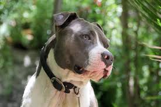
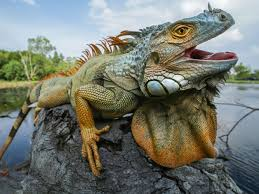
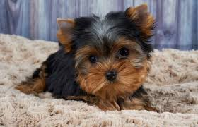
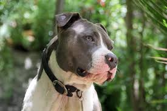
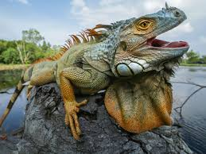
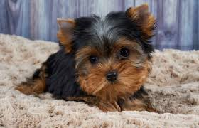

Here some of my favorite pets!
Those are some of my favorite pets
- retriver
- Pittbull
- Yorkie
- iguana
There is many breeds of dogs but pittbull would be my favorite one.I learn that they
are very loyal and loving creatures
However they are required lots of work
Here is a link to my favorite
things.
 
